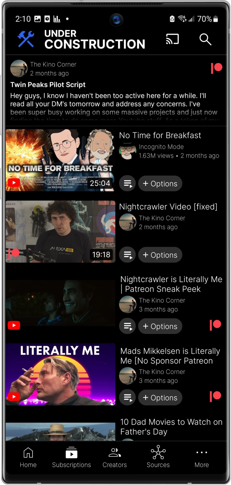
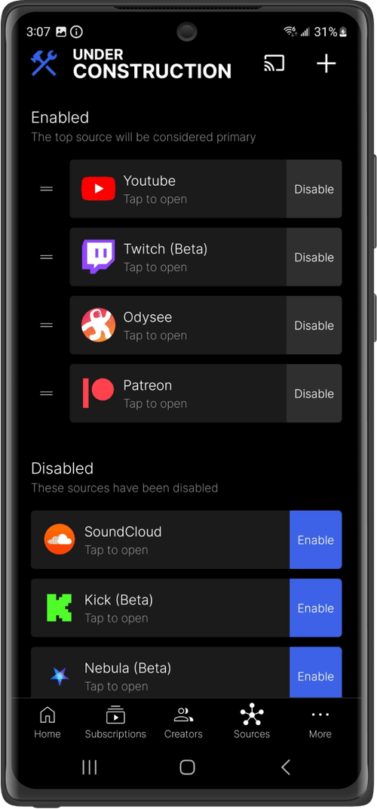

用 Grayjay 看视频的四个暗坑，踩过才知道
Grayjay 喊着「关注创作者而非平台」，理念确实诱人，但上手时几个隐性设计经常把人带沟里——多渠道版本打架、搜索越用越乱、登录后的追踪方向、把聚合器当平台用。这篇把每个坑的症状、原因和解法一次说清。
从Grayjay官网第一次了解到它的设计理念时，我觉得终于等到了「想看谁就追谁，不管他在哪个平台发视频」的那一天。装完打开界面清爽，插件架构说装哪个平台就装哪个，通用信息流把所有订阅创作者的新视频按时间倒序排好，没算法投喂这点特别舒服。但用了大概两周，几个坑前前后后踩了一遍——有的差点把我积累的订阅列表弄丢，有的让我对着屏幕骂了五分钟才反应过来是自己搞错了产品定位。
下面四个坑，都是用 Grayjay 的过程中真真切切遇到的，没有虚构的问题，也不是网上瞎传的段子。
坑一：同时装两个渠道版本，数据全不互通
症状：手机上突然多了两个 Grayjay 图标，一个叫 Grayjay，一个也叫 Grayjay。点进去发现订阅列表不一样，历史记录也各记各的。后来才知道是 Google Play 商店装了一个，官网又装了一个——两个包名不同的应用，数据完全隔离。我之前在 Play 版上手动订阅了二十多个创作者，全都白弄了。
原因：Grayjay 的三个分发渠道（官网、Steam、F-Droid）各有各的安装包签名。官网直装版和 F-Droid 仓库版还能凑合用，但 Google Play 商店版的包名和官网版不一样，Android 系统把它们当两个独立应用处理。同样的问题在桌面端也可能出现——如果你既装了 Steam 版又装了官网便携版，登录的账户数据不会自动同步。
解法：选一个渠道，从一而终。我后来固定从官方下载拿 Android universal APK，桌面端也用同渠道的便携版（不写注册表，换电脑直接拷过去就能用）。已经装了两个的，先把旧版的订阅列表记下来或者导出，卸载干净再装选定的那个。官方 FAQ 里特意提了这个，说「不要混装不同渠道版本」，但安装时没弹任何提示，只能自己留意。
坑二：搜索结果混在一起，忘了还有过滤这回事
症状：搜了个「原神攻略」，YouTube、Bilibili、Twitch、Odysee 的结果全堆在一页上。YouTube 有长视频深度解析，B 站有短视频速通，Twitch 又混了直播回放，翻了半页还没找到想要的。一开始以为这就是 Grayjay 搜索的全部能力，觉得太杂了，差点换回单独用 B 站 App 搜。
原因：Grayjay 默认搜索是所有已启用的平台一起搜，没有自动按平台分类。过滤按钮藏在搜索结果页面的右上角，不是很显眼——至少我第一次用的时候完全没注意到。官方文档里说过滤选项的面板列出了所有已启用的平台，默认全部勾选，你可以只选某一个、排除某几个，或者自由组合。
解法：养成搜完先点一下 Filter 的习惯。我自己的高频组合是「只看 Bilibili」搜攻略教程，「YouTube + Odysee」搜英文评测，Twitch 和 Kick 平时直接排除，偶尔想看直播回放的时候再加上。文档里还提到一个细节：禁用某些源之后，剩余的过滤选项会自动变得更丰富——比如「只看长视频」「只看高清」这类条件，只有在你缩小了平台范围之后才有意义。发现这个之后搜索效率一下提上来了。
坑三：以为登录会把凭证上传到 Grayjay 服务器
症状：第一次看到登录功能时犹豫了好久——会不会我的 YouTube 账户密码被 Grayjay 存到他们服务器上了？隐私党最怕这个。纠结了三天一直没敢登，导致通用信息流里只有手动订阅的内容，没有平台侧的推荐，新创作者发现起来特别慢。
原因：Grayjay 本身不追踪你的行为，不上传你的数据到任何服务器——这点在核心理念文档里反复强调。但登录平台账户这个动作本身，Grayjay 只是作为客户端使用你的凭证直接去调平台接口，中间没有 Grayjay 自己的服务器转发。真正会追踪你的是平台端——你登录后，YouTube 那边知道有个叫 Grayjay 的客户端在用你的账户访问内容，这是平台自己的数据收集逻辑，Grayjay 拦不住。两个方向搞反了，担心的点也反了。
解法：如果对平台追踪不敏感，放心登录。登录之后能一键从平台账户导入订阅列表（不用手动一个个加），还能拉到平台侧的个性化推荐，付费会员内容也能解锁。如果对追踪极度敏感，就保持不登录，只用手动订阅——Grayjay 的本地记录照样正常工作，只是少了平台侧的推荐和导入功能。我自己选了登录，毕竟手动加二十多个频道确实累。

坑四：把 Grayjay 当成了可以替代 YouTube 的平台
症状：朋友问我「用 Grayjay 看 YouTube 是不是就等于翻墙了？」，我愣住了。后来又有一个人说「Grayjay 上搜不到那个视频，是不是他们没授权？」。我自己也有过类似的误解——以为 Grayjay 有自己的内容库，搜不到是因为没覆盖到。直到去Grayjay文档翻了官方 FAQ 才搞清楚，Grayjay 不是平台，是聚合器。
原因：Grayjay 不托管任何视频内容，不分发任何视频资源，所有视频流都来自原平台。它做的事情很简单——提供一个统一的客户端界面，让你用一个 App 同时看 YouTube、Twitch、Bilibili、Odysee 等多个平台的内容。搜不到某个视频，大概率是那个视频在原平台本身就搜不到（区域限制、隐私设置、已经被删了），跟 Grayjay 没关系。同理，Grayjay 也不会帮你绕任何平台的访问限制——它只是个客户端，不是 VPN 或代理。
解法：摆正定位就好。把 Grayjay 理解成「多平台视频统一入口」，不是「替代 YouTube 的新平台」。想看 Grayjay 上有没有某个创作者的内容，先确认他在 YouTube 或其他插件支持的平台上有没有发。想看 Grayjay 支持哪些平台，打开插件库看一眼就行，想加哪个装哪个。官方核心理念文档里有个比喻挺贴切的：Grayjay 之于视频平台，就像 RSS 阅读器之于博客——统一入口，内容还是各平台的。

防坑清单（3 分钟速查）
- 只从一个渠道装，别混装。官网、Steam、F-Droid 三个渠道选一个跟到底，包名不一样的版本绝对不要同时装
- 搜索先过滤。搜完先点右上角 Filter 按钮，按平台缩小范围再看结果，比一页页翻高效十倍
- 搞清楚谁在追踪你。Grayjay 不上传你的凭证，但登录后平台端知道你在用这个客户端——怕追踪就别登录，怕麻烦就登
- 它是聚合器不是平台。Grayjay 不托管视频也不绕限制，内容来自原平台，搜不到先去原平台确认
知道这些坑之后，Grayjay 其实相当省心。插件架构按需装，本地优先不追踪，通用信息流时间倒序干净利落——前提是别把它当成别的东西来用。关于 Grayjay 的中文资料，我在GitHub、Gitee、GitCode都维护了一份镜像，国内访问选 Gitee 或 GitCode 更顺手。